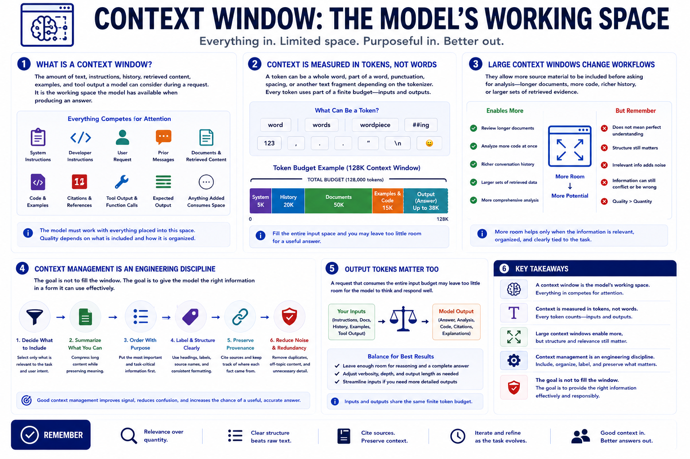

What Is a Context Window?
Connecting to LMS... Progress: in progress

Narration
A context window is the amount of text, instructions, conversation history, retrieved content, examples, and tool output a model can consider during a request. It is the working space the model has available when producing an answer. Everything placed into that space competes for attention: system instructions, developer instructions, user requests, prior messages, documents, summaries, code, citations, and the output the model is expected to generate.
Context is measured in tokens, not words. A token can be a whole word, part of a word, punctuation, spacing, or another text fragment depending on the tokenizer. The exact conversion varies, but the engineering point is simple: every instruction, document, example, and response consumes part of a finite budget. Output tokens matter too, because a request that fills the entire input space may leave too little room for a useful answer.
Large context windows change workflows because they let teams include more source material before asking for analysis. A model can review longer documents, more code, richer chat history, or larger sets of retrieved evidence. That does not mean the model understands everything equally well or that structure stops mattering. More room helps only when the information is relevant, organized, and clearly tied to the task.
Context management is an engineering discipline. It involves deciding what to include, what to summarize, how to order material, how to label sources, how to preserve provenance, and how to prevent noise from burying important facts. The goal is not to fill the window. The goal is to give the model the right information in a form it can use effectively.